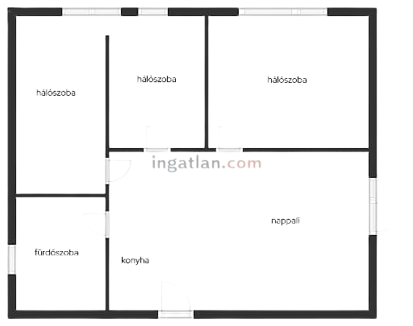

Alaprajz készítés
Az ingatlanhirdetések egyik fontos eleme az alaprajz. A jó alaprajz ugyanis segít a potenciális vásárlónak, bérlőnek megismerni az ingatlan tájolását, a nyílászárók, ajtók elhelyezkedését, vagy a vizesblokk kialakítását. Az elkészítése viszont sokszor időigényes és nehéz feladat. A megújult Alaprajztervező segítségével azonban gyorsan és egyszerűen elkészíthető az ingatlan alaprajza.
Ezért fontos az alaprajz a hirdetésben
Ingatlanhirdetések sokasága várja, hogy a vásárlók és a bérlők figyelmét felkeltse. Ehhez első lépésként elengedhetetlen egy jól felépített, a szükséges információkat tartalmazó és látványos képekkel kiegészített hirdetés. A képeken és az információkon túl van azonban még egy fontos alkotóelem: az alaprajz. Az alaprajz nem más, mint a hirdetett ingatlan “térképe”, ami jelöli azokat a fontos jellemzőket, amiket olykor a fényképek vagy a leírás sem tud teljesen átadni az érdeklődőknek.
Az alaprajz olyan fontos információkat árul ez az ingatlanról, mint a(z)
- Beosztás,
- nyílászárók, ajtók elhelyezkedése,
- szobák átjárhatósága,
- mellékhelyiség és a fürdő kialakítása,
- erkély, loggia megléte.
Elkészítési nehézségek
Bármennyire is hasznos az alaprajz, az elkészítése nem egyszerű. Egy jól elkészített, arányos alaprajz megszerkesztése időt és energiát igényel. Sokaknak viszont pont ebből a két feltételből van kevés, hiszen a mindennapok teendői mellett érthető, ha erre a feladatra nem jut elegendő kapacitás.
Ha pedig időhiányban látunk neki az alaprajzkészítésnek, akkor minden jószándék ellenére is árthatunk magunknak és a hirdetésünknek is. Jó példa erre, amikor egy hirdetésben egy papírra ceruzával vagy tollal felskiccelt alaprajz fényképével találkozunk. Azon túl, hogy a vázlat hibákat tartalmazhat, vagy esetleg nem tüntet fel fontos megjelöléseket, a hirdetés szépségének és megítélésének is árt.
Jobb megoldásnak tűnhet az interneten elérhető alaprajzkészítő programok alkalmazása. Itt viszont veszélyforrás lehet egyfelől az oldal biztonsága, hiszen letöltéskor nem tudhatjuk, hogy az alaprajz mellett mi kerül még a számítógépünkre vagy telefonunkra. További nehézséget jelenthet a szerkesztőprogram nyelve is. A legtöbb nemzetközi szerkesztőprogramban nem választható magyar nyelv, így nyelvismeret hiányában a használatuk ellehetetlenül.
Alaprajztervezés gyorsan és egyszerűen
Megújult formában, egyelőre béta verzióban, ismét elérhető az Alaprajztervező, amivel tovább bővül az ingatlan.com eladást és kiadást segítő szolgáltatásainak sora. Az Alaprajztervező használatával egyszerűen és gyorsan készíthető el az ingatlan alaprajza, ami a hirdetésben is használható, így növelve annak hatékonyságát.
A program használatához nincs szükség szerkesztési és grafikai ismeretekre. A szoftver lépésről lépésre kísér és vezet végig a teljes folyamaton. A készülő terv tetszőlegesen – akár utólagosan is – módosítható, törölhető, menthető.
A tervezés öt egyszerű lépésből áll: a főfalak, majd a válaszfalak rajzolásából, a nyílászárók elhelyezéséből és a helyiségek elnevezéséből. A tervezés utolsó pontját pedig az alaprajz letöltése jelenti, ami egy kattintással megoldható.